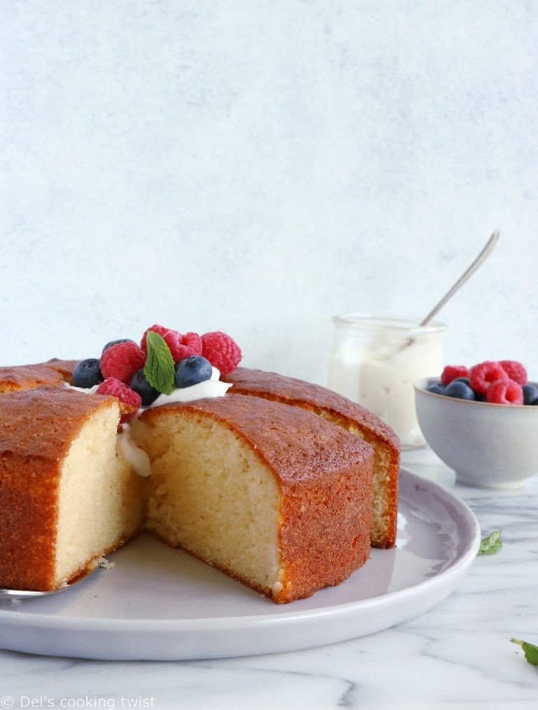

Yoghurt cake recipe

Description
Ah, the yoghurt cake of my childhood! It's the ultimate comfort cake, soft and fluffy at the same time, and childishly simple.A recipe to learn by heart.
Ingredients
- 1 pot of yoghurt
- 2 pots of sugar
- 3 pots of flour
- 1 jar of oil
- 3 eggs
- 1 tablespoon yeast
Steps
- Preheat the oven to 180°C and butter a 23 cm diameter tin. Set aside.
- Pour the yoghurt into a bowl.
- Add the oil, eggs, sugar and vanilla and whisk vigorously.
- Clean and dry the empty yoghurt pot for re-use.
- Add the flour and baking powder and mix well.
- Pour the mixture into the tin and bake for 35 minutes, or until a knife inserted in the centre comes out clean. Leave to cool completely before serving. The cake will keep for several days in an airtight tin.